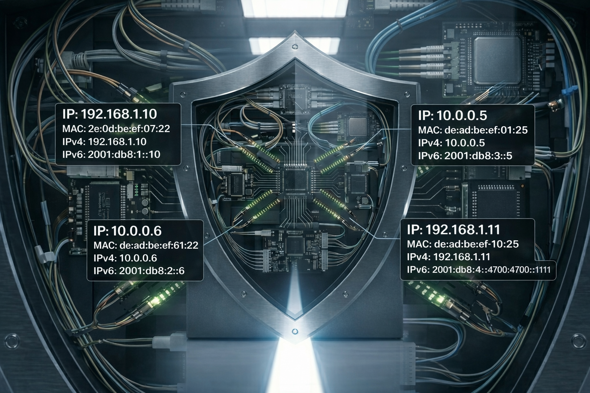

We believe security software like Kicksecure needs to remain Open Source and independent. Would you help sustain and grow the project? Learn more about our 14 year success story and maybe DONATE!
User NamespaceDocumentationDNSPrevious page: User NamespaceIndex page: DocumentationNext page: DNSNetworking

This page provides an overview of Kicksecure's networking features
and security enhancements. Topics include hardened sysctl settings such
as net.ipv4.conf.*.drop_gratuitous_arp,
net.ipv4.conf.*.arp_ignore,
net.ipv4.conf.*.arp_filter, and
net.ipv4.conf.*.shared_media. It explains the purpose of
these configurations, potential impacts on networking setups, and
instructions for reverting or customizing these settings if
necessary.
Introduction
For the most part, Kicksecure adheres to Debian's networking configuration and does not introduce major differences from how Debian works. If a particular networking setup works well with Debian, it will probably work well with Kicksecure too. However, some networking configuration options have been hardened for security, and this can result in problems in certain situations. This page documents how Kicksecure's networking configuration is hardened, and how to undo each hardened setting if needed.
Modified sysctl settings
Further documentation on each of the below settings can be found in the Linux kernel documentation on IP-related sysctl settings.[1] Most of these settings are inspired by the ANSSI's Linux system configuration recommendations.[2]
ARP sysctl settings
net.ipv4.conf.*.drop_gratuitous_arp=1is set, thus gratuitous ARP packets are ignored.[3] This makes local network man-in-the-middle attacks much more difficult to execute, but can cause severe issues if there are machines on the network that may change their MAC address for legitimate reasons. This configuration can be undone by settingnet.ipv4.conf.*.drop_gratuitous_arp=0in/etc/sysctl.d.net.ipv4.conf.*.arp_ignore=2is set, thus ARP requests are accepted only if the requester and the requested IP address are on the same subnet on the same physical interface.[4] In other words, if a machine on network A asks a Kicksecure system if it is in possession of an IP address that belongs to network B, Kicksecure will ignore that request, even if the system does indeed own that IP address. This prevents an attacker on the local network from enumerating all IP addresses in use on the system, which can be useful to avoid information leaks when using VPNs.[5] This may break certain networking setups, such as when running virtual machines within Kicksecure with bridged networking. However, it does not seem to negatively affect libvirt virtual machines using NAT networking (which is the default when using virt-manager). This configuration can be undone by settingnet.ipv4.conf.*.arp_ignore=0in/etc/sysctl.d.net.ipv4.conf.*.arp_filter=1is set, thus ARP filtering is enabled.[6] If a machine has two physical network interfaces that are part of the same subnet, an ARP request for one of those interface's IPs will only be answered if packets from that IP would be routed out that interface. In other words, a machine on the local network can't learn how to talk to interface A by talking to interface B. This provides further IP address leak prevention on top of thearp_ignoresetting discussed above. This configuration can be undone by settingnet.ipv4.conf.*.arp_filter=0in/etc/sysctl.d.
IPv4 sysctl settings
net.ipv4.conf.*.shared_media=0is set, thus shared media redirects are disabled.[7] This helps reduce the risk of IP spoofing attacks. This shouldn't cause any problems in general, but it may reduce networking performance in some situations. This configuration can be undone by settingnet.ipv4.conf.*.shared_media=1in/etc/sysctl.d.
Others
For a list of network-related sysctl settings, see security-misc
readme chapter Networking. For additional details, refer to the
configuration file /usr/lib/sysctl.d/990-security-misc.conf
under the chapter Networking. (Search for the word
"Networking" inside the file.) This is otherwise undocumented.
See Also
Footnotes
Categories: Documentation